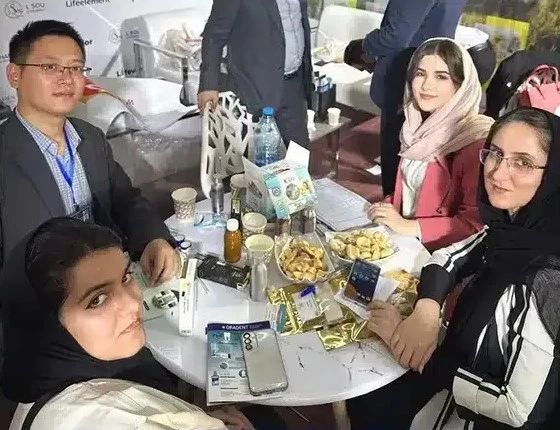

<div class="container-fluid rounded-5 animate__animated animate__fadeIn animate__delay-1s  ">
    <div class="row d-flex justify-content-center align-items-center" style="margin-top: 40px;">
        <div class="col-12 col-md-6 d-flex justify-content-center align-items-center flex-column rounded-5 w-75">

            <div class="swiper myslider mt-4 rounded-4" style="max-width: 950px;">
                <div class="swiper-wrapper">
                    <div class="swiper-slide">
                        
                    </div>

                </div>
            </div>
            <div style="margin-top:40px; font-weight: bold; font-size: 18px; color: #0c5460;width: 100%;text-align: right;">
                تعداد بازدید: <span id="viewCount">0</span>
            </div>
            <h4 class="iron mt-5" style="color:#186600;">حضور گلفام دارو در نمایشگاه صادراتی Iran Expo 2025 | معرفی
                توانمندی‌های صادراتی ایران</h4>
            <p class="new-line mt-4" style="color: #0c5460; font-size: 20px; text-align: justify;">
                شرکت گلفام دارو با افتخار در هفتمین نمایشگاه توانمندی‌های صادراتی جمهوری اسلامی ایران (Iran Expo 2025)
                حضور خواهد داشت. این نمایشگاه یکی از مهم‌ترین رویدادهای تجاری بین‌المللی کشور است که با هدف توسعه صادرات
                و معرفی دستاوردهای شرکت‌های ایرانی برگزار می‌شود. گلفام دارو با ارائه محصولات دارویی تخصصی و نوآورانه
                خود، میزبان بازدیدکنندگان داخلی و خارجی خواهد بود.
            </p>
            <h4 class="iron mt-3 w-100" style="color:#186600;text-align: right;">دعوت به بازدید از غرفه شرکت گل‌فام دارو
                در Iran Expo 2025</h4>
            <P class="new-line " style="color: #0c5460; margin-top: 30px; font-size: 20px; text-align: justify;">
                در نمایشگاه صادراتی ایران، شرکت گلفام دارو مجموعه‌ای از محصولات دارویی خود را با تمرکز بر استانداردهای
                بین‌المللی و قابلیت صادرات معرفی خواهد کرد. حضور در این نمایشگاه فرصتی عالی برای آشنایی با ظرفیت‌های
                صادراتی این شرکت در حوزه تولید دارو و مکمل‌های تخصصی است.

                آدرس غرفه: سالن ۵، غرفه ۵۱۹، نمایشگاه بین‌المللی تهران
                تاریخ برگزاری: ۸ تا ۱۲ اردیبهشت ۱۴۰۴
                ساعات بازدید: از ساعت ۸ تا ۱۶
            </P>
            <h4 class="iron mt-3 w-100" style="color:#186600; text-align: right;">
                چرا بازدید از غرفه گلفام دارو در Iran Expo 2025 مهم است؟</h4>
            <div class="il w-100 text-end mt-3" style="color: #0c5460;font-size:20px;">
                <ul>
                    <li>آشنایی با محصولات دارویی قابل</li>
                    <li>صادراتدریافت اطلاعات فنی و مشاوره تخصصی</li>
                    <li>آغاز همکاری‌های تجاری با شرکت‌های بین‌المللی</li>
                    <li>بهره‌مندی از پیشنهادهای ویژه نمایشگاهی</li>
                </ul>
            </div>
            </P>
        </div>
    </div>
</div>
</div>


</div>